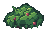
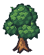
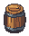
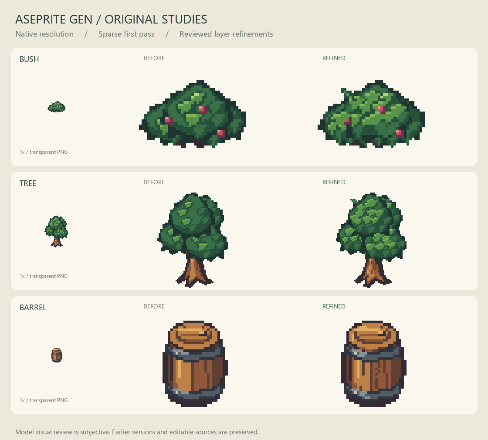

Bush

Grouped foliage and an irregular crown edge
Original sprites generated and refined through Aseprite MCP. Native images, editable sources and honest review evidence.

Grouped foliage and an irregular crown edge

Denser light clusters and directional bark

Interrupted rim highlights and stave grain

Technical checks do not establish artistic approval. Outputs remain simpler and darker than the private reference group. No private reference images are included here.